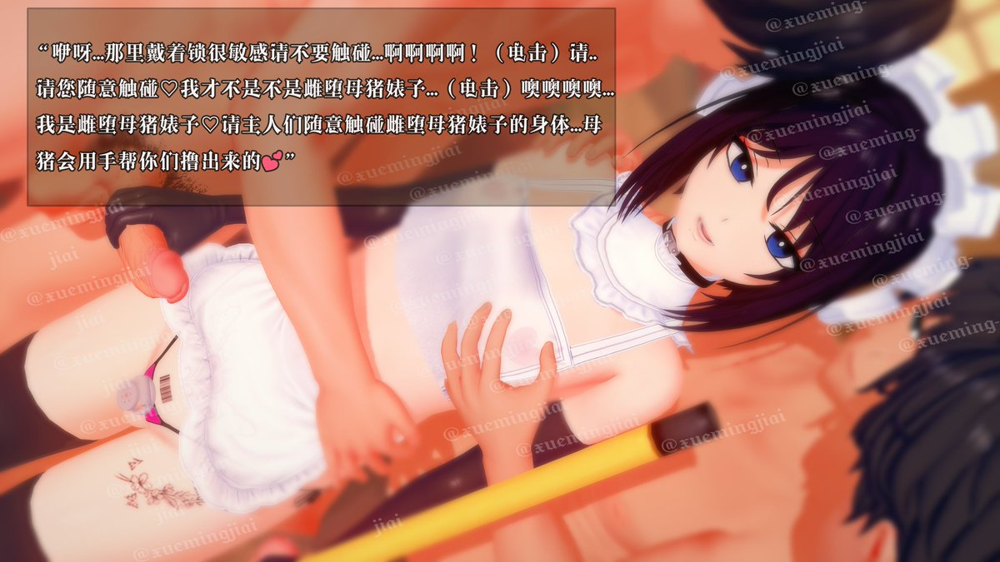

雌堕伪娘母猪婊子...？才不是这样啊！
噢噢噢噢...!没错...我就是下贱的雌堕母猪伪娘婊子，请姐姐不要再电了♡♡♡
主人们的肉棒都好雄伟呢，和我被锁起来早就失去性功能的废物肉虫完全不一样♡♡♡
（撸动）（撸动）嗯唔...主人的手...捏到母猪的下体阴蒂会变得很敏感的啊啊...还有乳头噢噢噢..♡♡♡

噢噢噢噢...!没错...我就是下贱的雌堕母猪伪娘婊子，请姐姐不要再电了♡♡♡
主人们的肉棒都好雄伟呢，和我被锁起来早就失去性功能的废物肉虫完全不一样♡♡♡
（撸动）（撸动）嗯唔...主人的手...捏到母猪的下体阴蒂会变得很敏感的啊啊...还有乳头噢噢噢..♡♡♡

这样就可以了吧？!
这件女仆装...也太太太太过于暴露了吧！
上半身完全是透明的...下半身的裙摆掀起来就能看见羞耻的部位了....光是看见我穿成这样还不能满足吗？更进一步的事情...不可以..!啊啊啊啊啊♡
我知道错了...姐姐不要电我了...请主人们这边请～只要不插入的情况下做什么都可以哦💕 https://t.co/DNG8qpscP3
这件女仆装...也太太太太过于暴露了吧！
上半身完全是透明的...下半身的裙摆掀起来就能看见羞耻的部位了....光是看见我穿成这样还不能满足吗？更进一步的事情...不可以..!啊啊啊啊啊♡
我知道错了...姐姐不要电我了...请主人们这边请～只要不插入的情况下做什么都可以哦💕 https://t.co/DNG8qpscP3